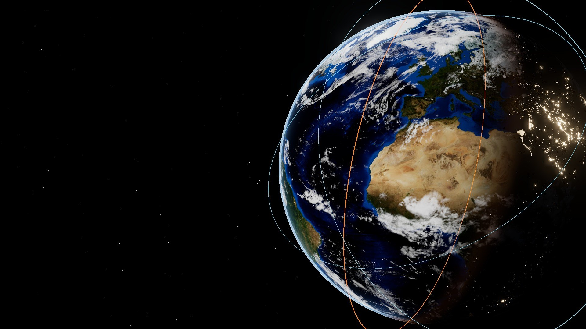
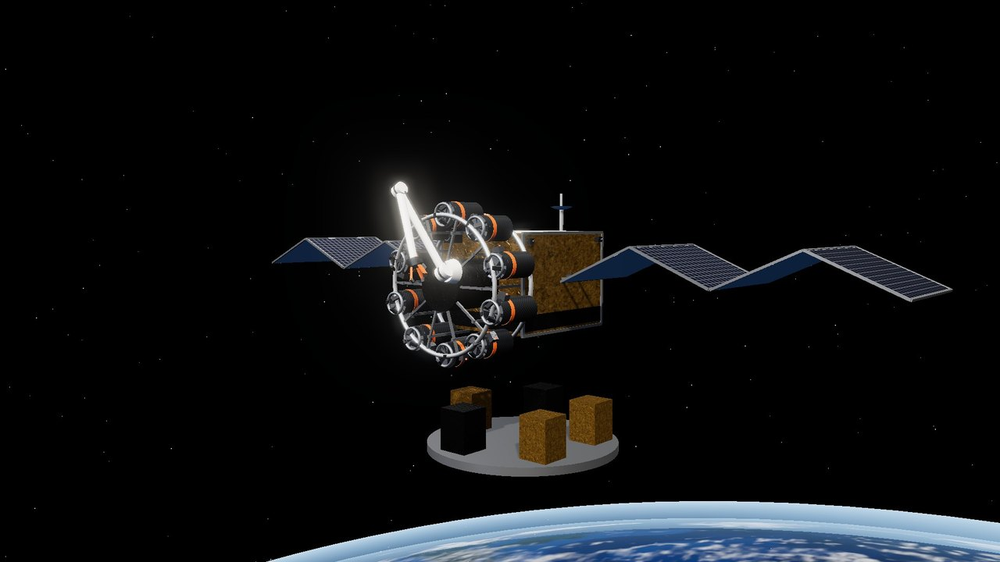
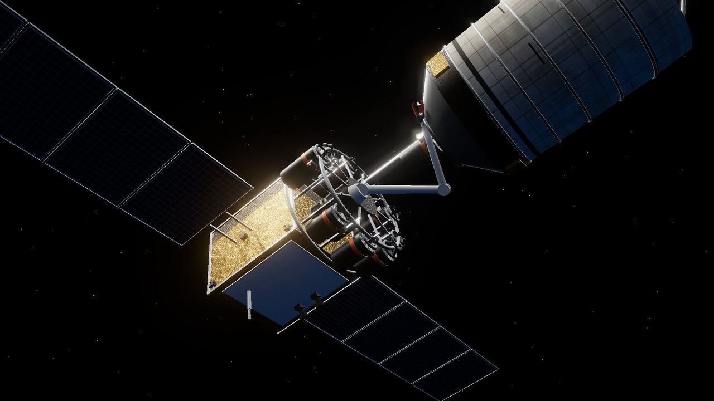
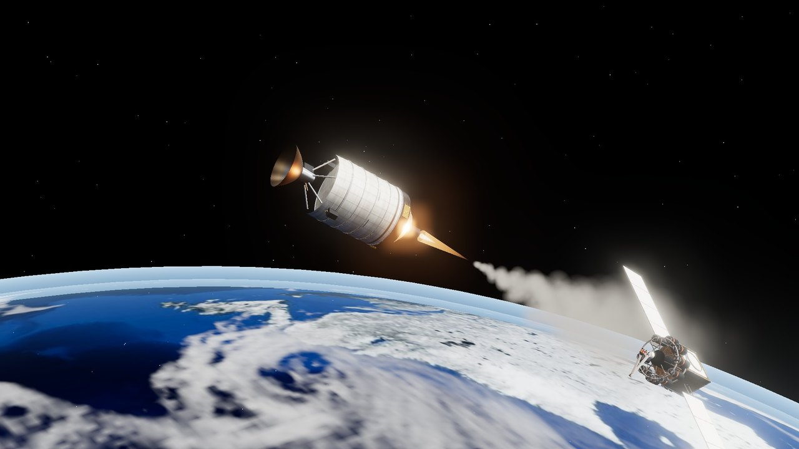
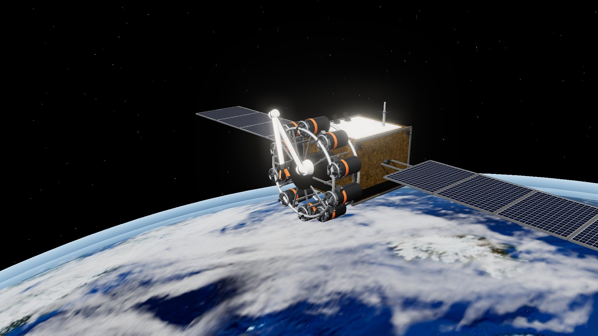
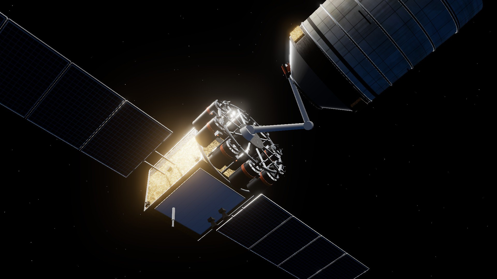

DECA Innovation Plan2026–27
A garbage truck for space junk.
One spacecraft, ten pickups per trip. Earth does the steering.
Every dot is a real tracked object, from the 16 Oct 2026 public catalogue.
Innovation PlanDECA 2026–27
Cleaning up space junk ten pieces at a time, priced like a garbage route.
Brandon Graff
Founder & Chief Executive Officer
Winter Park High School
1331 College Point · Winter Park, FL 32789 · [Presentation date]
2
I
Overview
The idea on one page
4
II
Business Opportunity
Space junk is multiplying, and cleanup is priced for one piece at a time
5
III
Customer Segments
Who pays, and our first route
8
IV
Unique Value Proposition
One trip, ten pickups; Earth does the steering
10
V
Solution
How it works, the truck, proof, demo, money, risks
12
VI
Conclusion
Three things to remember, and our ask
18
VII
Bibliography
Our sources
19
VIII
Appendix
Assumptions behind the numbers
20
3
IOverview
Everyone asks
How do we grab
a piece of junk?
We asked
Why does every piece
need its own rocket?
Problem
Dead satellites and rocket stages pile up. Every crash makes thousands more pieces.
Our fix
One spacecraft collects 10 pieces per trip, on a route, like a garbage truck.
Who pays
Space agencies first, then satellite operators and insurers. A fixed fee per piece.
Price per piece
$12.2M
our model, launch included
Price: Orbital Curbside cost model, base assumptions (appendix). Today's prices: slide 7.
4
IIBusiness opportunity
16,000
still working
31,000
dead satellites, old rocket stages and crash fragments
Why it matters to you
Maps, weather forecasts and the internet run on satellites flying through this. The Space Station has swerved to dodge junk 41 times.
ESA DISCOSweb statistics (Oct 2026) · CelesTrak catalogue, 16 Oct 2026 · NASA ODQN 29(3)
5
IIBusiness opportunity
47,000
tracked objects. Over half are small crash fragments: too many and too small to collect one by one.
~500
big dead rocket stages and satellites, 1–9 tonnes each. One crash in 2009 made 2,200 new pieces.
50
the worst of them. Removing just these would cut the risk of debris-making crashes about in half.
How many removals are enough?
~5 a year
NASA models: removing about 5 big objects a year keeps low orbit from getting worse.
0 so far
big dead objects removed by a cleanup spacecraft so far. The first capture attempt (Japan, ADRAS-J2) is planned for 2027–28.
ESA Space Environment Report 2026 · McKnight, IAA memo; Top 50 update, IAC 2025 · CelesTrak, Iridium 33 / Cosmos 2251 (2009) · Liou & Johnson, NASA (2009)
6
IIBusiness opportunity
| Who paid | Pieces | Price per piece |
|---|---|---|
| Europe (ESA), 2020 | 1 | $93M |
| Japan (JAXA), 2024 | 1 | $82M |
| UK Space Agency, 2026 | 2 | $40M |
| US Space Force (SDA), 2026 | 1 | $52.5M |
The root cause isn't the grabbing. It's the business model. It's like hiring a whole garbage truck for every trash bag.
Why now
5 years
New US rule: dead satellites must come down within 5 years.
1 in 10
may fail to get down on their own. Someone has to pick them up.
$1.1–1.6B
analysts' estimate of the debris-removal market, 2025.
ESA ClearSpace-1 €86M (2020) · JAXA ADRAS-J2 ≈¥13.2B (2024) · UK ADR >£60M for 2 (Oct 2026) · Starfish/SDA $52.5M incl. options (Jan 2026) · FCC 22-74, FCC 26-47 · Mordor Intelligence; ResearchAndMarkets
7
IIICustomer segments
1
Space agencies
ESA · Japan · UK · US
Why they care
Their old rockets are up there, and they already sign cleanup contracts.
How they buy
Contracts paid at milestones.
2
Satellite companies
Iridium · OneWeb · Planet
Why they care
Must bring dead satellites down within 5 years. Some will fail.
How they buy
A fixed fee per satellite removed.
3
Insurers
Space underwriters
Why they care
They pay out when satellites are lost or hit.
How they buy
Removal bundled with policies, once it's proven.
“I expect the cost is really in the millions or tens of millions, at which price I know it doesn't make sense.”
Matt Desch, CEO of Iridium (2019), on removing its dead satellites. Satellite companies need a much lower price. A route gives it.
Numbered by who pays first · Quote: C. Henry, SpaceNews, 30 Dec 2019
8

IIICustomer segments · our first customers
4
India (PSLV)
4
France (Ariane)
2
USA (Agena, Delta)
Where the cheap rockets go
Shared SpaceX launches drop satellites right in their orbit band. First pickup: 80 days after launch.
No permission problem
Every object belongs to the country that launched it. These owners' agencies already pay for cleanup.
The bigger prize, later: 142 Soviet-era SL-8 stages
A type on experts' list of the 50 most dangerous objects. Russia must agree; about $13M each.
Our analysis of the CelesTrak catalogue, 16 Oct 2026 · Outer Space Treaty (1967), Art. VIII
9
IVUnique value proposition
Today
One rocket per piece
10 pieces = 10 launches
$40–93M
per piece
Orbital Curbside
One truck, ten stops
10 pieces = 1 launch
$12.2M
per piece, our model
Our promise: space cleanup priced like a garbage route. A fixed fee per piece, paid only when it's confirmed coming down.
Our figure: model estimate, launch included, base assumptions (appendix) · Today's prices: slide 7
10
IVUnique value proposition · the secret
Every orbit slowly swings around Earth,
like the hand of a clock. Lower orbits swing faster, because Earth bulges at the equator.
So the truck parks a little higher or lower
than its next target, and waits until the two line up, like clock hands meeting.
Propellant to close a 19° gap between two orbits
Turn with fuel
1,094 kg
Wait about a year
19 kg
57× less. Our planner trades waiting time against fuel to find the cheapest route.
Our model · J2 nodal precession (Vallado, 2013)
11
VSolution · how it works

1
Ride along
The truck rides a shared SpaceX rocket, the cheapest seat to space.
2
Drift into line
It climbs to the junk's height and waits for Earth to line up the next target.

3
Grab and tag
A robot arm holds the old rocket. The truck latches on a small rocket kit.

4
Send it down
The kit fires. The old rocket falls and burns up. The truck drives on.
Renders from our 3D concept model, sized by our math. Not a flight design.
12

VSolution · meet the truck
Electric engines
Run on xenon gas; about 5× more fuel-efficient than chemical rockets.
Robot arm
Holds each old rocket steady while a kit is attached.
10 rocket kits
One per pickup. Each sends one piece down to burn up.
Solar wings
Turn sunlight into power for the engines.
Weight at launch
1,650 kg
852 kg 10 kits
600 kg truck
198 kg xenon
Concept sized from our model (first route). Not a flight design. Thruster class: Busek BHT-1500.
13
VSolution · proof the math works
Each dot is one of the 113 moves in JPL's winning plan, recomputed by our model.
In 2017 the European Space Agency ran a contest to plan routes exactly like ours. NASA's Jet Propulsion Laboratory won, and published every move.
2.2%
our fuel totals vs JPL's, across all 113 moves
0.06°
our orbit predictions vs SGP4, the model used to track real satellites
Petropoulos et al. (2018), GTOC9 JPL results · Vallado et al. (2006), SGP4 · 0.30° on our first route
14

VSolution · watch one pickup
10
old stages removed per trip
490 days
launch to last stop (16 months)
198 kg
of xenon fuel for the whole trip
3D concept model, sized from our mass budget · route: our planner + SGP4. Not a flight design.
15
VSolution · the money
Today's missions
public contracts, 1–2 pieces each
$40–93M
Our truck, 1 pickup
sanity check: matches today
$97M
Our truck, 10 pickups
our first route
$12.2M
Reused truck
new kits sent up; ~50 pickups over ~6 years
$5.2M
Cost per piece removed, launch included. 80% of 20,000 simulated cases land between $11.2M and $15.4M. Biggest unknown: what the truck itself costs ($50–115M).
Our model; inputs from NASA OTPS (2023), SpaceX rideshare prices, Busek · assumptions in appendix
16
VSolution · risks and roadmap
Risk
Grabbing it
Nobody has grabbed a tumbling old rocket yet. We partner with whoever proves it (Japan tries in 2027–28).
Risk
Cost
Truck and kit prices are estimates. I'm testing them with experts.
Risk
Permission
Every object belongs to its country. First route: US, Indian and French stages.
Risk
Falling pieces
Heavy objects are steered to burn up over the open ocean.
2026–27 · now
Talk to customers and experts; sharpen the model
2027–28
Sign a partner for the arm and spacecraft
2028–29
Small test trip: 2–3 pickups
2029+
First 10-pickup truck
Outer Space Treaty (1967), Art. VIII · JAXA/Astroscale ADRAS-J2 · dates after 2027 are targets
17
VIConclusion
1
We don't need to remove it all: taking out the worst 50 cuts the danger about in half.
2
Cleanup costs $40–93M per piece today. Our route: about $12M, launch included.
3
Earth does the steering, and the math is checked against NASA JPL.
The ask
$250K in pre-seed funding for 12 months: finish customer interviews, design the rocket kit, sign a test-trip partner.
Scan to fly the route
Orbital Curbside
18
VIIBibliography
ESA Space Debris Office. Space Environment Statistics (DISCOSweb), Oct 2026; Space Environment Report 2022 and 2026.
Kessler & Cour-Palais (1978), J. Geophys. Res., 83(A6). Liou, J.-C., & Johnson, N. L. (2009), active debris removal in LEO, Acta Astronautica, 64.
McKnight, D., et al. (2021). The 50 statistically-most-concerning derelict objects in LEO. Acta Astronautica, 181; Top 50 update, IAC 2025.
CelesTrak. Iridium 33 / Cosmos 2251 collision (2009). celestrak.org/events/collision
NASA Orbital Debris Program Office. Orbital Debris Quarterly News, 29(3): ISS debris avoidance maneuvers.
FCC. FCC 22-74 (2022); FCC 26-47 (22 Jul 2026).
ESA (2020); Astroscale (2024); UK Government (15 Oct 2026); Starfish Space (Jan 2026): removal contract announcements.
Colvin, T. J., Karcz, J., & Wusk, G. (2023). Cost and Benefit Analysis of Orbital Debris Remediation. NASA OTPS.
Henry, C. (2019, Dec 30). Iridium would pay to deorbit its defunct satellites. SpaceNews.
Mordor Intelligence; ResearchAndMarkets; The Business Research Company. Space debris market reports (2025).
United Nations (1967). Outer Space Treaty, Article VIII.
SpaceX rideshare prices (2026–27); Light Reading (16 Oct 2026); Spaceflight Now (24 Feb 2026).
Izzo, D. (2017). GTOC9: The Kessler Run. ESA. doi:10.5281/zenodo.570193
Petropoulos, A., et al. (2018). GTOC9: Results from the Jet Propulsion Laboratory. Acta Futura, 11.
Di Carlo, M., Romero Martin, J. M., & Vasile, M. (2017). Low-thrust active removal in LEO. Adv. Space Res., 59(5).
Iskender, O. B., Felicetti, L., et al. (2026). Drift-aware multi-target space tug logistics. arXiv:2607.22974.
Barea, A., Urrutxua, H., & Cadarso, L. (2020). Multi-target ADR selection and planning. Acta Astronautica.
Borelli, G., & Colombo, C. (2026). Space debris index for multi-purpose ADR. Adv. Space Res., 77.
Kelso, T. S. CelesTrak GP data and SATCAT (16 Oct 2026). McDowell, J. C. GCAT (15 Oct 2026).
Vallado, D. A., et al. (2006). Revisiting Spacetrack Report #3 (SGP4). AIAA 2006-6753.
Vallado, D. A. (2013). Fundamentals of Astrodynamics and Applications (4th ed.).
Edelbaum, T. N. (1961). Propulsion requirements for controllable satellites. ARS Journal, 31(8).
Busek Co. BHT-1500 Hall thruster datasheet (accessed Oct 2026).
Earth imagery: NASA Visible Earth / Earth Observatory (Blue Marble, Black Marble, clouds). Renders: our own.
Schibsted Grotesk typeface, SIL Open Font License.
Full list with links: written paper, references [1]–[28]
19
VIIIAppendix · assumptions behind the numbers
| Input | Low · base · high | Source |
|---|---|---|
| Truck hardware | $50 · 80 · 115M | NASA OTPS (2023); base = assumption |
| Rocket kit, each | $0.5 · 1.5 · 3.0M | Assumption: no public price |
| Launch | $7.0 · 7.5 · 15k/kg | SpaceX rideshare to 550 km; truck climbs |
| Xenon | $2.8 · 2.8 · 12k/kg | Market reports (2024–26) |
| Operations | $3 · 5 · 10M/yr | Assumption |
| Insurance | 5 · 8 · 12% | Assumption, of hardware + launch |
| Fuel margin | 10 · 10 · 25% | Our JPL and SGP4 checks |
| Truck | 600 kg dry; Hall thrusters, Isp 1,710 s; 10 days per stop | |
| Kits | Solid motor, Isp 285 s; lowers orbit to 250 km; ≈85 kg each (first route) | |
Cost per piece if one input goes low → high (base $12.2M)
Truck hardware
Kit price
Launch price
Operations
Insurance
Xenon price
Truck cost matters most. Fuel barely matters.
Base case: first route, 10 pickups, 490 days from launch, launch included. Sources in paper.
20
→ / click: next · ← : back · F: full screen